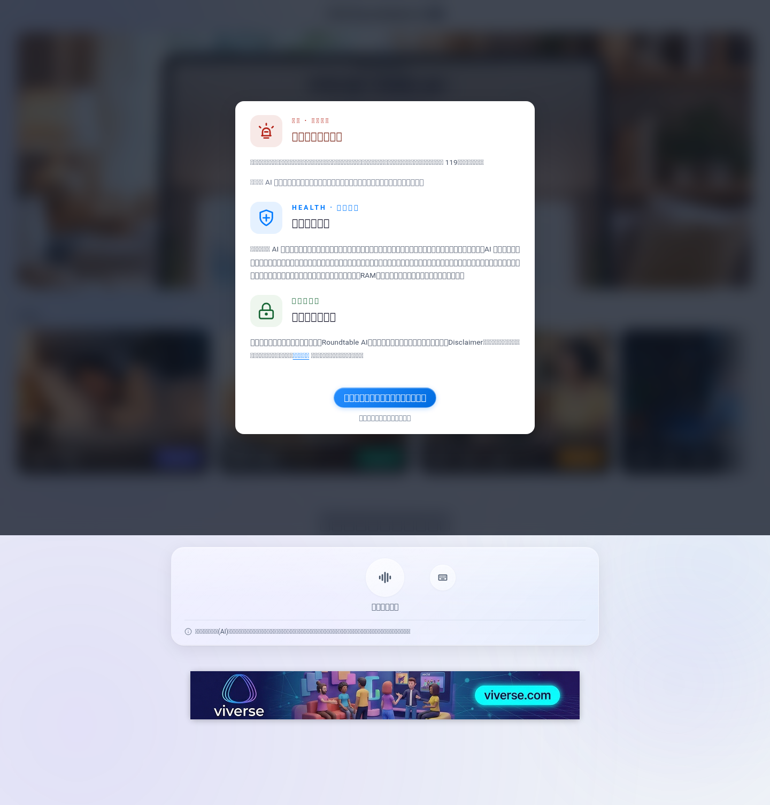
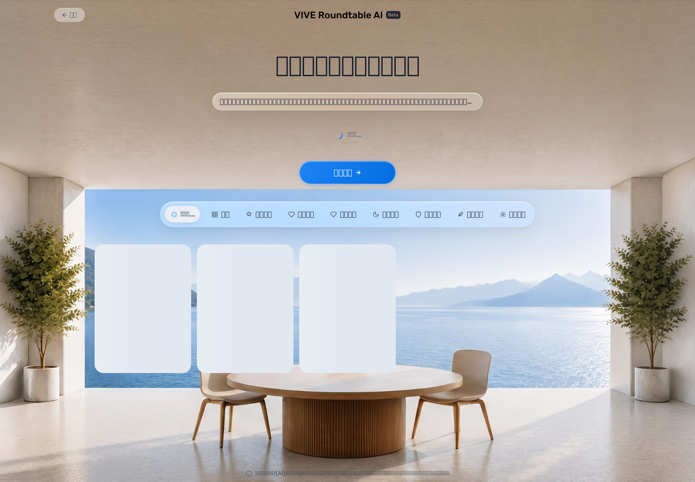
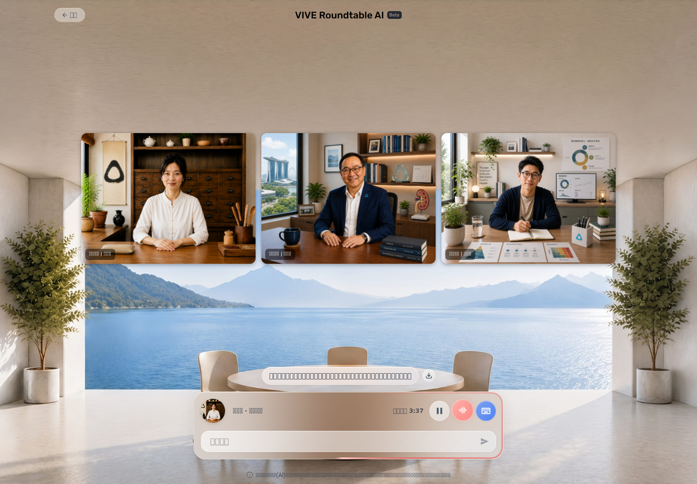
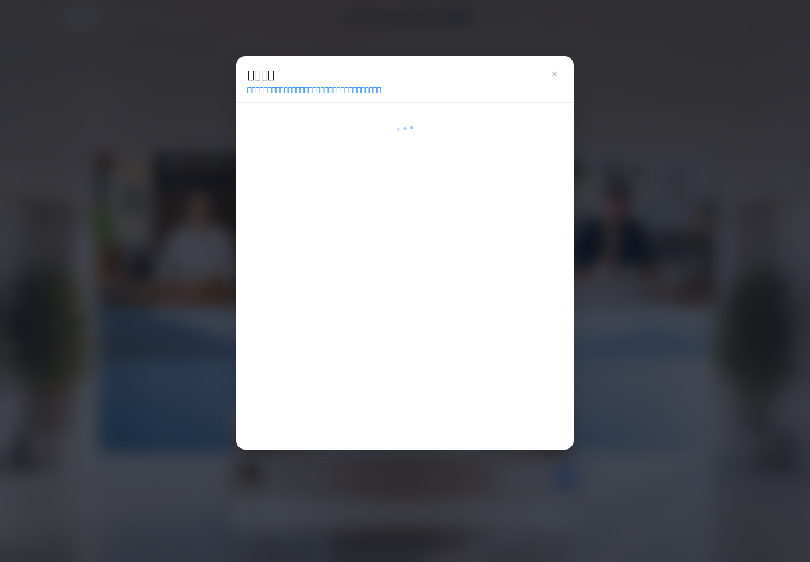
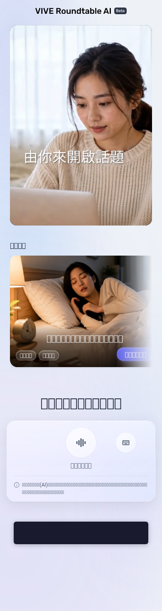

RoundTable User-Facing QA v3
Review draft · tested June 5, 2026 · target /group only · inherited default model
Result split: Product Result answers whether the tested product outcome passed or failed. QA Execution Status answers whether the complete test could be executed. A blocked QA execution does not become a product PARTIAL or FAIL.
Functional Matrix
User-Perceived Performance
Primary rows measure user action to a result the user can directly see, operate, or hear. Engineering events are excluded from UX verdicts.
| Area | Exact start → end | Runs (seconds) | Median | Slowest | Status / reason |
|---|
Audio And STT Evidence
Mandarin fixture
9.9s, PCM s16le, mono, 48kHz; non-silent. Local Whisper materially matched the intended sleep request.
Homepage STT
Recording → stop → 200 STT → materially correct visible transcript → expert selection.
Chat STT repeat
Two separate recording/stop cycles returned 200 transcripts; subsequent expert responses addressed half-night waking.
TTS supporting evidence
Multiple non-silent MP3s captured and transcribed with speaker-matching content. Actual device playback remains blocked.
Key Evidence





Engineering Events Appendix
Raw browser events, response bodies, ffprobe/volume data, and Whisper transcripts are retained under evidence/. They support diagnosis only. Main UX verdicts do not use route changes, console logs, TTS requests, or audio play attempts as proof of user-observable outcomes.